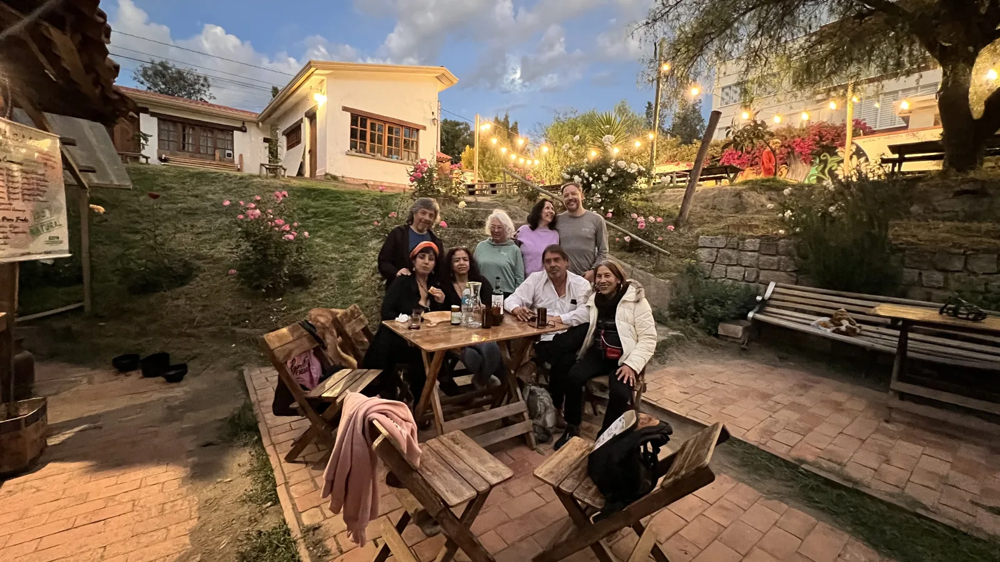
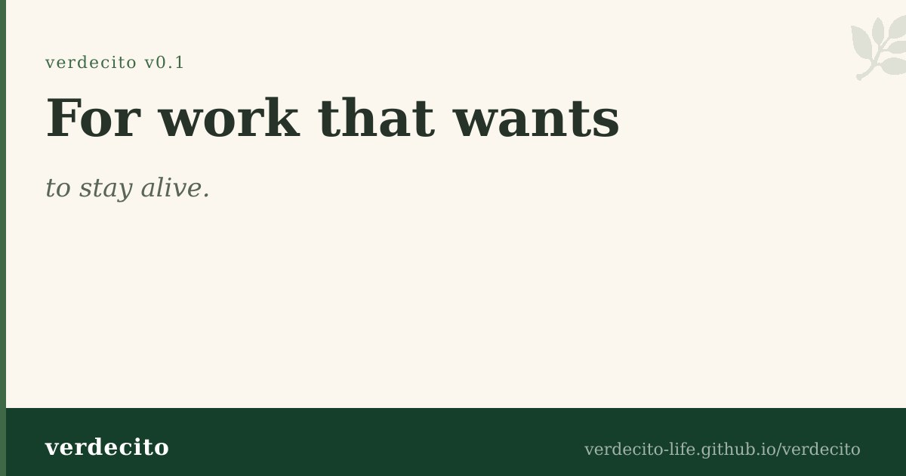
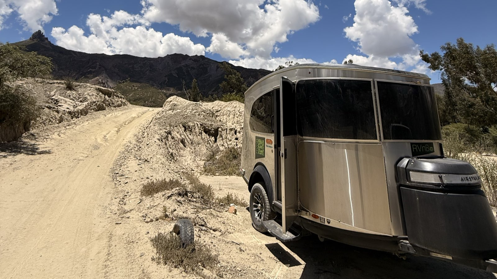

Cultural space
Proyecto Cultural Barranco
An alternative cultural space in Mallasa for music, food, cine, workshops, birthdays, yoga, and community gatherings in modo Barranco.
Mallasa · La Paz · Bolivia
I build spaces, documents, protocols, and small public tools that help real communities organize without losing their soul.

What connects the work
Some projects are public spaces. Some are open manuals. Some are repo-native systems for memory, coordination, and replication. The common thread is practical: start from what is alive, make it legible, and leave enough structure for others to continue.
Current public surfaces
Cultural space
An alternative cultural space in Mallasa for music, food, cine, workshops, birthdays, yoga, and community gatherings in modo Barranco.
Open cultural replication
A documented, careful, replicable cultural celebration model for 4/20: community, legal prudence, public conversation, and host spaces.


Territorial systems
An open model for connecting lodging, local routes, mobility, visitor experience, and progressive infrastructure around real territories.
More doors
Working style
This page is intentionally small. Each project has its own public home and repository. The portfolio is the clean crossing point: enough synthesis to orient, enough links to continue.